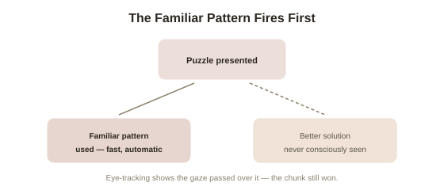

Chapter 4: The Cost of Expertise
Chapter 3 established that expertise runs on chunking — deeply ingrained, instantly-recognized patterns built from years of practice. That same mechanism, which makes experts so fast and fluent, has a well-documented dark side: the very patterns that make expert perception so efficient can also make it strangely rigid, blind to alternatives that don't match the expected pattern, and this chapter covers exactly how and why.
The Einstellung effect: a mental set that blocks a better answer
Psychologist Abraham Luchins first demonstrated this with a classic water-jug puzzle experiment in the 1940s, and later chess research gave it its most striking, expertise-specific demonstration. Researchers presented skilled chess players with a puzzle solvable by a familiar, well-known tactical pattern — but one that also had a shorter, more elegant solution the player had likely never encountered in that specific configuration before. A strong majority of players, including highly skilled ones, found and used the familiar pattern, and simply never noticed the better, unfamiliar solution sitting in plain sight — even when specifically told a shorter solution existed and given time to search for it. This is the Einstellung effect (German for "mental set" — the tendency, once a familiar solution pattern is recognized, to apply it automatically, actively blocking recognition of a different, sometimes better, solution). Crucially, eye-tracking studies confirmed players' gaze often did pass directly over the squares involved in the better solution — the visual information reached their eyes, but the familiar chunk, activated first, appears to have actively suppressed conscious recognition of the alternative pattern once it engaged.
Why this is the direct cost of the same mechanism, not a separate flaw
This isn't a coincidental weakness sitting alongside expertise — it's the predictable flip side of Chapter 3's chunking mechanism itself. A chunk is powerful precisely because it triggers fast, automatic, low-effort recognition rather than requiring effortful, conscious analysis every time a similar pattern appears — that's the entire point, and the entire source of an expert's speed advantage. But that same automaticity means a highly practiced, frequently successful pattern can activate first and crowd out the deliberate search needed to notice a different, unfamiliar pattern would work better in this specific instance. The more deeply ingrained and more frequently successful a chunk has been, the stronger this crowding-out effect tends to be — meaning, counterintuitively, that the most experienced experts in a familiar sub-pattern can sometimes be more susceptible to Einstellung on that specific pattern than a moderately skilled player who hasn't yet built as strong an automatic association.

Expert blind spots beyond the game board
The same underlying pattern shows up in real professional contexts with real consequences. Studies of experienced physicians have found that a strong, early diagnostic impression can create a documented bias called anchoring in diagnosis — a close cousin of Chapter 2's anchoring bias from the cognitive biases topic in this library — where later, genuinely contradictory symptoms get discounted or explained away rather than triggering a full reconsideration of the initial, confidently-formed impression. Experienced pilots and other highly trained professionals show a related phenomenon sometimes called expertise-induced blindness: a familiar-looking situation triggers a fast, automatic, usually-correct response pattern that can, in a small but real share of genuinely unusual cases, override the more careful, deliberate analysis a truly novel situation actually requires. None of this means expertise is unreliable in general — these failures are specifically concentrated in the rare cases where a situation superficially resembles a familiar pattern while actually requiring a different response, precisely the situation Einstellung research predicts would be hardest for an expert to catch.
What actually mitigates this, according to the research
The documented countermeasures follow directly from understanding the mechanism rather than simply "trying to stay open-minded," which research on Einstellung suggests doesn't reliably work on its own. Deliberately generating multiple candidate solutions before committing to the first one that comes to mind — forcing at least a brief search past the first automatically-activated pattern — has shown real effectiveness in structured settings. Structured "second opinion" processes, particularly effective when the second reviewer doesn't know the first reviewer's initial impression (directly echoing the double-blind principle covered elsewhere in this library's discussion of eyewitness accuracy), catch a meaningful share of anchored, pattern-blocked errors precisely because a fresh mind isn't carrying the same activated chunk. Both approaches share the same underlying logic as the debiasing techniques covered in this library's Cognitive Biases topic: since the automatic process can't reliably be overridden through willpower alone once it's already engaged, the effective fix changes the structure of the decision instead.
Try this
Ideas for noticing or testing this in your own life.
- Next time you solve a familiar-looking problem quickly, pause before finalizing your answer and deliberately search for a second, different approach — a direct, low-cost application of this chapter's main countermeasure.
- Notice a domain where you have real expertise, and think honestly about whether a familiar-looking situation has ever led you to miss something a genuine beginner, looking with fresh eyes, might have caught.
Worth pulling on?
A few loose threads from this chapter — if any of these genuinely grab you, that's a good sign of where to go next.
- With both the benefits and the costs of expertise now covered, the last open question is where the raw capacity for building expertise actually comes from in the first place. → The subject of the final chapter in this topic: talent, genetics, and a realistic synthesis of nature and nurture in skill.
- The Einstellung effect is a specific, domain-expert version of a much broader pattern where a fast, automatic mental process overrides slower, more accurate deliberation. → Already in the library: Cognitive Biases & Judgment covers the general-purpose version of this same fast-versus-slow dynamic.